정보처리기사(구) (2018-03-04 기출문제)
1과목: 데이터 베이스
1. 그래프의 특수한 형태로 노드(Node) 와 선분(Branch)으로 되어 있고, 정점 사이에 사이클(Cycle)이 형성되어 있지 않으며, 자료 사이의 관계성이 계층 형식으로 나타나는 비선형 구조는?
- tree
- network
- stack
- distributed
(정답률: 84%)

2. 다음 BETWEEN 연산의 의미와 동일한 것은?
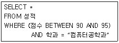
- 점수 ＞= 90 AND 점수＜= 95
- 점수 ＞90 AND 점수 ＜ 95
- 점수 ＞ 90 AND 점수 ＜= 95
- 점수 ＞= 90 AND 점수 ＜ 95
(정답률: 79%)
3. 다음 자료에 대하여 삽입(insertion) 정렬 기법을 사용하여 오름차순으로 정렬하고자 한다. 1회전 후의 결과는?(오류 신고가 접수된 문제입니다. 반드시 정답과 해설을 확인하시기 바랍니다.)
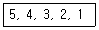
- 4, 3, 2, 1, 5
- 3, 4, 5, 2, 1
- 4, 5, 3, 2, 1
- 1, 2, 3, 4, 5
(정답률: 67%)
4. SQL View(뷰)에 대한 설명으로 틀린 것은?
- 뷰(View)를 제거하고자 할때는 DROP 문을 이용한다.
- 뷰(View)의 정의를 변경하고자 할때는 ALTER 문을 이용한다.
- 뷰(View)를 생성하고자 할때는 CREATE 문을 이용한다.
- 뷰(View)의 내용을 검색하고자 할때는 SELECT 문을 이용한다.
(정답률: 68%)
5. 다음 설명에 해당하는 스키마는?
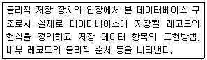
- conceptual schema
- internal schema
- external schema
- definition schema
(정답률: 76%)
6. 데이터베이스 내에서 데이터들이 불필요하게 중복되어 릴레이션 조작시 예기치 못한 곤란한 현상을 무엇이라고 하는가?
- Normalization
- Bug
- Anomaly
- Error
(정답률: 80%)
7. 다음 전위식(prefix)을 후위식(postfix)으로 옳게 표현한 것은?
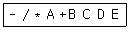
- A B C + * D / E -
- A B * C D / + E -
- A B * C + D / E -
- A B C + D / * E -
(정답률: 58%)
8. 트랜잭션의 특성 중 아래 내용에 해당하는 것은?
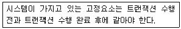
- 원자성(atomicity)
- 일관성(consistency)
- 격리성(isolation)
- 영속성(durability)
(정답률: 80%)
9. 관계데이터 모델의 무결성 제약 중 기본키 값의 속성 값이 널(null)값이 아닌 원자 값을 갖는 성질은?
- 개체 무결성
- 참조 무결성
- 도메인 무결성
- 튜플의 유일성
(정답률: 81%)
10. 양 방향에서 입ㆍ출력이 가능한 선형 자료구조로 2개의 포인터를 이용하여 리스트의 양쪽 끝 모두에서 삽입ㆍ삭제가 가능한 것은?
- 데크(Deque)
- 스택(Stack)
- 큐(Queue)
- 트리(Tree)
(정답률: 71%)
11. 병행제어 기법 중 로킹에 대한 설명으로 옳지 않은 것은?
- 로킹의 대상이 되는 객체의 크기를 로킹 단위라고 한다.
- 파일은 로킹 단위가 될 수 있지만 레코드는 로킹 단위가 될 수 없다.
- 로킹의 단위가 작아지면 로킹 오버헤드가 증가한다.
- 로킹의 단위가 커지면 데이터 베이스 공유도가 저하한다.
(정답률: 77%)
12. NoSQL의 설명으로 틀린 것은?
- Not Only SQL의 약자이다.
- 비정형 데이터의 저장을 위해 유연한 데이터 모델을 지원한다.
- 전통적인 관계형 데이터베이스관리시스템과는 다른 비관계형(non-relational) DBMS이다.
- 정규화를 전제로 하고 있어 갱신 시에 저장 공간이 적게 든다.
(정답률: 61%)
13. 트랜잭션의 실행이 실패하였음을 알리는 연산자로 트랜잭션이 수행한 결과를 원래의 상태로 원상 복귀 시키는 연산은?
- COMMIT 연산
- BACKUP 연산
- LOG 연산
- ROLLBACK 연산
(정답률: 85%)
14. 관계 대수에 대한 설명으로 옳지 않은 것은?
- 릴레이션을 처리하기 위한 연산의 집합으로 피연산자가 릴레이션이고 결과도 릴레이션이다.
- 원하는 정보와 그 정보를 어떻게 유도하는가를 기술하는 절차적 특징을 가지고 있다.
- 일반 집합 연산과 순수 관계 연산이 있다.
- 수학의 Predicate Calculus 에 기반을 두고 있다.
(정답률: 63%)
15. 데이터베이스 로그(log)를 필요로 하는 회복 기법은?
- 즉각 갱신 기법
- 대수적 코딩 방법
- 타임 스탬프 기법
- 폴딩 기법
(정답률: 40%)
16. What is the quantity of tuples in consist of the relation?
- Degree
- Instance
- Domain
- Cardinality
(정답률: 77%)
17. 이진 검색 알고리즘에 대한 설명으로 틀린 것은?
- 탐색 효율이 좋고 탐색 시간이 적게 소요된다.
- 검색할 데이터가 정렬되어 있어야 한다.
- 피보나치 수열에 따라 다음에 비교할 대상을 선정하여 검색한다.
- 비교횟수를 거듭할 때마다 검색 대상이 되는 데이터의 수가 절반으로 줄어든다.
(정답률: 68%)
18. 정규화의 필요성으로 거리가 먼 것은?
- 데이터 구조의 안정성 최대화
- 중복 데이터의 활성화
- 수정, 삭제시 이상현상의 최소화
- 테이블 불일치 위험의 최소화
(정답률: 86%)
19. 순서가 A, B, C, D 로 정해진 입력 자료를 스택에 입력하였다가 출력할 때, 가능한 출력 순서의 결과가 아닌 것은?
- D, A, B, C
- A, B, C, D
- A, B, D, C
- B, C, D, A
(정답률: 77%)
20. 개체-관계 모델의 E-R 다이어그램에서 사용되는 기호와 그 의미의 연결이 옳지 않은 것은?
- 사각형 - 개체 타입
- 삼각형 - 속성
- 선 - 개체타입과 속성을 연결
- 마름모 - 관계 타입
(정답률: 82%)
2과목: 전자 계산기 구조
21. 다음과 같이 표현되는 바이트 머신의 데이터 형식의 명칭으로 가장 옳은 것은?
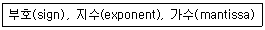
- 고정소수점 데이터(fixed point date)
- 가변장 논리 데이터(variable length logical data)
- 부동소수점 데이터(floating point data)
- 팩(pack) 형식의 10진수(decimal nomber)
(정답률: 61%)
22. 다음 ADD 명령어의 마이크로 오퍼에이션에서 t2시간에 수행되어야 할 가장 적합한 동작(A)는? (단, MAR : Memory Address Register, MBR : Memory Buffer Register, M(addr) : Memory, AC : 누산기이다.)
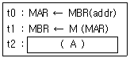
- AC ⟵ MBR
- MBR ⟵ AC
- M(MBR) ⟵ MBR
- AC ⟵ AC + MBR
(정답률: 52%)
23. 모듈러스-14 카운터는 몇 가지의 상태를 가지며, 이 카운터를 구성하기 위한 최소의 플립플롭의 수는 몇 개인가?
- 상태 : 13가지, 플립플롭 : 3개
- 상태 : 14가지, 플립플롭 : 4개
- 상태 : 15가지, 플립플롭 : 5개
- 상태 : 16가지, 플립플롭 : 6개
(정답률: 59%)
24. 다음 중 SDRAM의 동작에 대한 설명으로 가장 옳지 않은 것은?
- 여러 개의 내부 뱅크들(Banks)에서 동시 액세스가 진행된다.
- 액세스가 진행되는 동안 CPU가 대기한다.
- 버스 클럭에 동기화되어 정보가 전송된다.
- 여러 개의 데이터들을 연속으로 전송하는 버스트 모드를 지원한다.
(정답률: 50%)
25. 전체 기억장치 액세스 횟수가 50 이고, 원하는 데이터가 캐시에 있는 횟수가 45 라고 할 때, 캐시의 미스율(miss ratio)은?
- 0.1
- 0.2
- 0.8
- 0.9
(정답률: 58%)
26. 입출력장치의 인터럽트 우선순위를 하드웨어적으로 결정하는 방식은?
- Daisy Chain
- Handshake
- Polling
- Strobe
(정답률: 49%)
27. 다음 중 일반 응용프로그램이 직접 접근할 수 없는 레지스터는?
- 범용 레지스터
- 플래그 레지스터
- 인덱스 레지스터
- 세그먼트 레지스터
(정답률: 39%)
28. 인스트럭션의 설계 과정에서 고려해야 할 사항이 아닌 것은?
- 데이터 구조
- 연산자의 수와 종류
- 인터럽트 종류
- 주소지정 방식
(정답률: 44%)
29. DMA에 대한 설명으로 가장 옳은 것은?
- 인코더와 같은 기능을 수행한다.
- inDirect Memory Acknowledge의 약자이다.
- CPU와 메모리 사이의 속도차이를 해결하기 위한 장치이다.
- 메모리와 입출력 디바이스 사이에 데이터의 주고받음이 직접 행해지는 기법이다.
(정답률: 49%)
30. 소형계산기(calculator)에서 BCD 코드 대신 excess-3 코드를 많이 사용하는 가장 큰 이유는?
- 그래픽 기호의 표현이 용이하다.
- 에러 검출이 쉽다.
- 연속된 순간에 하나의 비트만 변화한다.
- 자기 보수가 가능하다.
(정답률: 47%)
31. 인터럽트의 우선순위결정과 가장 관계없는 것은?
- 트랩 방식
- 폴링 방식
- 벡터 방식
- 데이지 체인 방식
(정답률: 43%)
32. 세그먼트에서 부연산을 수행하는데 20 ns가 걸리고, 파이프라인은 4 세그먼트로 구성되어 있으며 100개의 테스크를 순차적으로 수행하는 파이프라인 시스템은 비파이프라인 시스템에 비해 약 몇 배의 속도 향상을 얻을 수 있는가?
- 2.81
- 3.25
- 3.88
- 4.08
(정답률: 37%)
33. N 가지의 정보를 2진수 코드로 부호화 하는데 필요한 비트수를 계산하는 방법으로 옳은 것은?
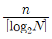
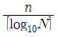
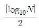
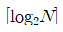
(정답률: 45%)
34. 64K DRAM 기억소자를 이용하여 64K바이트 주기억장치를 구성하고자 한다. 이 때 64K DRAM을 몇 개 사용하여야 하는가? (단, K=kilo이다.)
- 1
- 2
- 4
- 8
(정답률: 40%)
35. 병렬 가산기를 구성하는 각각의 전가산기 출력 캐리를 미리 예측 및 처리하여 리플캐리 지연을 제거한 가산기로 가장 옳은 것은?
- Ripple Carry Adder
- Carry Lookahead Adder
- Serial-parallel Adder
- Carry Save Adder
(정답률: 48%)
36. 다음 마이크로명령어 형식에 관한 설명으로 가장 옳지 않은 것은?
- 조건 필드는 분기에 사용될 제어신호들을 발생시킨다.
- 연산 필드가 2개인 경우 2개의 마이크로 연산이 동시에 수행된다.
- 주소 필드는 분기가 발생할 경우 목적지 마이크로명령어 주소로 사용된다.
- 분기 필드는 분기의 종류와 다음에 실행할 마이크로명령어의 주소를 결정하는 방법을 명시한다.
(정답률: 19%)
37. 다음 중 1주소 명령어 형식을 따르는 마이크로명령어 MUL A를 가장 바르게 표현한 것은? (단, 보기의 M[A]는 기억장치 A번지의 내용을 의미한다.)
- AC ⟵ AC×M[A]
- R1 ⟵ R2×M[A]
- AC ⟵ M[A]
- M[A] ⟵ AC
(정답률: 41%)
38. 일반적으로 CPU가 DMA 제어기로 보내는 정보가 아닌 것은?
- I/O 장치의 주소
- 연산(쓰기 혹은 읽기)지정자
- CPU 제조 고유 번호
- 전송될 데이터 단어들의 수
(정답률: 61%)
39. AND 마이크로 동작과 가장 유사한 것은?
- insert 동작
- mask 동작
- OR 동작
- packing 동작
(정답률: 54%)
40. 캐시메모리의 기록정책에서 쓰기(write) 동작이 이루어질 때마다 캐시메모리와 주기억장치의 내용을 동시에 갱신하는 방식으로 가장 옳은 것은?
- write-through
- write-back
- write-none
- write-all
(정답률: 59%)
3과목: 운영체제
41. 페이징 기법에서 페이지 크기가 작아질수록 발생하는 현상으로 거리가 먼 것은?
- 기억장소 이용 효율이 증가한다.
- 입ㆍ출력 시간이 늘어난다.
- 내부 단편화가 감소한다.
- 페이지 맵 테이블의 크기가 감소한다.
(정답률: 51%)
42. Preemptive Scheduling 방식에 해당하는 것은?
- FIFO
- FCFS
- HRN
- RR
(정답률: 52%)
43. 시스템소프트웨어의 구성에서 처리프로그램과 가장 관계가 없는 것은?
- Job Scheduler
- Language Translate Program
- Service Program
- Problem Program
(정답률: 38%)
44. 다음과 같은 Task List에서 SJF방식으로 Scheduling할 경우 Task 2의 종료 시간을 구하면? (단, 발생되는 Overhead는 무시한다.)
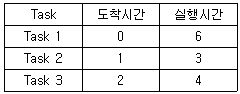
- 3
- 6
- 9
- 13
(정답률: 67%)
45. UNIX에서 사용자에 대한 파일의 접근을 제한하는데 사용되는 명령어는?
- chmod
- du
- fork
- cat
(정답률: 72%)
46. 프로세스들 간의 메모리 경쟁으로 인하여 지나치게 페이지폴트가 발생하여 전체 시스템의 성능이 저하되는 현상은?
- Fragmentation
- Thrashing
- Locality
- Prepaging
(정답률: 71%)
47. 주기억장치의 사용자 영역을 일정 수의 고정된 크기로 분할하여 준비상태 큐에서 준비 중인 프로그램을 각 영역에 할당하여 수행하는 기법은?
- 가변분할 기억장치 할당
- 고정분할 기억장치 할당
- 교체 기법
- 오버레이 기법
(정답률: 76%)
48. 한정된 시간 내 자료를 분석하여 정해진 시간에 반드시 작업을 처리하여야 하는 시스템은?
- Batch Processing
- Online Processing
- Real Time Processing
- Time Sharing Processing
(정답률: 63%)
49. 다음 디스크 스케줄링과 관계된 방법 중 그 성격이 다른 하나는?
- C-SCAN
- FCFS
- SLTF
- SSTF
(정답률: 39%)
50. 프로세스의 상태 전이에 속하지 않는 것은?
- Dispatch
- Spooling
- Wake up
- Workout
(정답률: 42%)
51. 스레드의 특징으로 가장 옳지 않은 것은?
- 실행 환경을 공유시켜 기억장소의 낭비가 줄어든다.
- 프로세스 외부에 존재하는 스레드도 있다.
- 하나의 프로세스를 여러 개의 스레드로 생성하여 병행성을 증진시킬 수 있다.
- 프로세스들 간의 통신을 향상시킬 수 있다.
(정답률: 63%)
52. 운영체제를 자원 관리자(Resource Manager)라는 관점으로 접근했을 때, 자원들을 관리하는 과정을 순서대로 가장 옳게 나열한 것은?
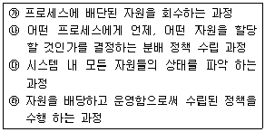
- ㉮ → ㉯ → ㉰ → ㉱
- ㉮ → ㉰ → ㉱ → ㉯
- ㉰ → ㉯ → ㉱ → ㉮
- ㉰ → ㉱ → ㉯ → ㉮
(정답률: 72%)
53. 페이지 교체기법 중 LRU와 비슷한 알고리즘 이며, 최근에 사용하지 않은 페이지를 교체하는 기법으로 시간 오버헤드를 줄이기 위해 각 페이지마다 참조 비트와 변형 비트를 두는 교체기법은?
- FIFO
- LFU
- NUR
- OPT
(정답률: 53%)
54. 분산 운영체제의 개념 중 강결합(TIGHTLY-COUPLED) 시스템의 설명으로 옳지 않은 것은?
- 프로세서간의 통신은 공유 메모리를 이용한다.
- 여러 처리기들 간에 하나의 저장장치를 공유한다.
- 메모리에 대한 프로세서 간의 경쟁 최소화가 고려되어야 한다.
- 각 사이트는 자신만의 독립된 운영체제와 주기억장치를 갖는다.
(정답률: 65%)
55. 운영체제의 운용 기법 종류 중 다음 설명에 가장 부합하는 것은?
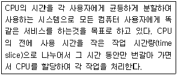
- Batch Processing System
- Multi Programming System
- Time Sharing System
- Real Time System
(정답률: 75%)
56. 모니터에 대한 설명으로 옳지 않은 것은?
- 자원 요구 프로세스는 그 자원 관련 모니터 진입부를 반드시 호출한다.
- 한 순간에 하나의 프로세스만이 모니터에 진입할 수 있다.
- 정보 은폐의 개념을 사용한다.
- 모니터 외부의 프로세스는 모니터 내부 데이터를 직접 액세스 할 수 있다.
(정답률: 70%)
57. Dead Lock 발생의 필요충분조건이 아닌 것은?
- Circular Wait
- Hold and Wait
- Mutual Exclusion
- Preemption
(정답률: 62%)
58. FIFO 스케줄링에서 3개의 작업 도착시간과 CPU 사용시간(burst time)이 다음 표와 같다. 이 때 모든 작업들의 평균 반환시간(turn around time)은? (단, 소수점 이하는 반올림 처리한다.)
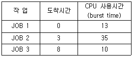
- 12
- 36
- 58
- 69
(정답률: 69%)
59. UNIX에서 현재 디렉토리 내의 파일 목록을 확인하는 명령어는?
- ls
- cat
- fack
- cp
(정답률: 74%)
60. 다음 설명에 해당하는 디렉토리 구조는?
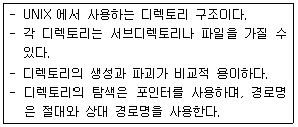
- 1단계 디렉토리 구조
- 2단계 디렉토리 구조
- 비순환 그래프 디렉토리 구조
- 트리 디렉토리 구조
(정답률: 65%)
4과목: 소프트웨어 공학
61. 소프트웨어 비용 추정모형(estimation models)이 아닌 것은?
- COCOMO
- Putnam
- Function-Point
- PERT
(정답률: 47%)
62. LOC기법에 의하여 예측된 총 라인수가 36,000라인, 개발에 참여할 프로그래머가 6명, 프로그래머들의 평균 생산성이 월간 300라인일 때 개발에 소요되는 기간을 계산한 결과로 가장 옳은 것은?
- 5개월
- 10개월
- 15개월
- 20개월
(정답률: 77%)
63. CORBA에서 인터페이스 정의 언어는?
- IDL
- ADL
- CSL
- UML
(정답률: 50%)
64. 소프트웨어 개발 영역을 결정하는 요소 중 다음 사항과 가장 관계있는 것은?
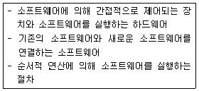
- 기능
- 성능
- 제약 조건
- 인터페이스
(정답률: 66%)
65. 블랙박스 테스트 기법에 관한 다음 설명과 가장 부합하는 것은?
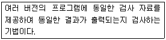
- Boundary Value Analysis
- Cause Effect Graphing Testing
- Equivalence Partitioning Testing
- Comparison Testing
(정답률: 52%)
66. 유지보수의 종류 중 소프트웨어 테스팅 동안 밝혀지지 않은 모든 잠재적인 오류를 수정하기 위한 보수 형태로서 오류의 수정과 진단 과정이 포함되는 것은?
- Perfective maintenance
- Adaptive maintenance
- Preventive maintenance
- Corrective maintenance
(정답률: 41%)
67. 브룩스(Brooks) 법칙의 의미를 가장 옳게 설명한 것은?
- 프로젝트 개발에 참여하는 남성과 여성의 비율은 동일해야 한다.
- 새로운 개발 인력이 진행 중인 프로젝트에 투입될 경우 작업 적응 기간과 부작용으로 인해 빠른 시간 내에 프로젝트는 완료될 수 없다.
- 프로젝트 수행 기간의 단축을 위해서는 많은 비용이 투입되어야 한다.
- 프로젝트에 개발자가 많이 참여할수록 프로젝트의 완료 기간은 지연된다.
(정답률: 70%)
68. 럼바우(Rumbaugh)의 객체지향 분석에서 사용되는 분석 활동을 가장 옳게 나열한 것은?
- 객체 모델링, 동적 모델링, 정적 모델링
- 객체 모델링, 동적 모델링, 기능 모델링
- 동적 모델링, 기능 모델링, 정적 모델링
- 정적 모델링, 객체 모델링, 기능 모델링
(정답률: 78%)
69. 위험 모니터링의 의미를 가장 잘 설명한 것은?
- 위험을 이해하는 것
- 위험요소들에 대하여 계획적으로 관리하는 것
- 위험 요소 징후들에 대하여 계속적으로 인지하는 것
- 첫 번째 조치로 위험을 피할 수 있도록 하는 것
(정답률: 68%)
70. 자료 흐름도(DFD)에서 “Process"의 표기 형태는?
- 원
- 화살표
- 사각형
- 직선(단선, 이중선)
(정답률: 51%)
71. 소프트웨어 재공학이 소프트웨어의 재개발에 비해 갖는 장점으로 가장 거리가 먼 것은?
- 위험부담 감소
- 비용 절감
- 시스템 명세의 오류억제
- 개발시간의 증가
(정답률: 77%)
72. 소프트웨어 시스템 명세서의 유지 보수에 대한 설명으로 가장 거리가 먼 것은?
- 명세서의 유지 보수란 명세서를 항상 최신의 상태로 만드는 것을 말한다.
- 소프트웨어는 계속 수정 보완되기 때문에 명세서도 따라서 보완되지 않으면 일관성을 유지하기 어렵다.
- 최신의 명세서는 필요한 경우 즉시 사용자에게 배포해야 한다.
- 시스템 개발자와 사용자는 동일한 명세서를 사용하기 때문에 시스템의 구조를 사용자도 잘 알고 있어야 한다.
(정답률: 70%)
73. 한 모듈 내의 각 구성 요소들이 공통의 목적을 달성하기 위하여 서로 얼마나 관련이 있는지의 기능적 연관의 정도를 나타내는 것은?
- cohesion
- coupling
- structure
- unity
(정답률: 55%)
74. 객체지향에서 정보 은닉과 가장 밀접한 관계가 있는 것은?
- Encapsulation
- Class
- Method
- Instance
(정답률: 76%)
75. 시스템 검사의 종류 중 통합 시스템의 맥락에서 소프트웨어의 실시간 성능을 검사하며, 모든 단계에서 수행되는 것은?
- 복구 검사
- 보안 검사
- 성능 검사
- 강도 검사
(정답률: 76%)
76. 다음의 자동화 예측 도구들 중 Rayleigh-Norden 곡선과 Putnam의 예측모델에 기반을 둔 것은?
- ESTIMACS
- SLIM
- SPQR/20
- WICOMO
(정답률: 67%)
77. 결합도(Coupling) 단계를 약한 순서에서 강한 순서로 가장 옳게 표시한 것은?
- stamp → data →control → common → content
- control → data → stamp → common → content
- content → stamp → control → common → data
- data → stamp → control → common → content
(정답률: 64%)
78. 다음 설명에 해당하는 생명주기 모형으로 가장 옳은 것은?
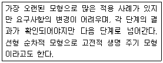
- 프로토타입 모형(Prototype Model)
- 코코모 모형(Cocomo Model)
- 폭포수 모형(Waterfall Model)
- 점진적 모형(Spiral Model)
(정답률: 77%)
79. 유지보수의 활동 종류로 볼 수 없는 것은?
- Interfere Maintenance
- Adaptive Maintenance
- Perfective Maintenance
- Preventive Maintenance
(정답률: 63%)
80. Software Project의 비용 결정 요소와 가장 관련이 적은 것은?
- 개발자의 능력
- 요구되는 신뢰도
- 하드웨어의 성능
- 개발제품의 복잡도
(정답률: 55%)
5과목: 데이터 통신
81. HDLC에서 사용되는 프레임의 유형이 아닌 것은?
- Information Frame
- Supervisory Frame
- Unnumbered Frame
- Control Frame
(정답률: 45%)
82. 다음 LAN의 네트워크 토폴로지는 어떤 형인가?
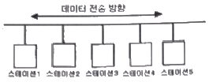
- 버스형
- 성형
- 링형
- 그물형
(정답률: 73%)
83. 회선을 제어하기 위한 제어 문자 중 실제 전송한 데이터 그룹의 시작임을 의미하는 것은?
- SOH
- STX
- SYN
- DLE
(정답률: 59%)
84. 8진 PSK의 오류 확률은 2진 PSK 오류 확률의 몇 배인가?
- 2배
- 3배
- 4배
- 5배
(정답률: 61%)
85. 한 전송로의 데이터 전송 시간을 일정한 시간폭(time slot)으로 나누어 각 부 채널에 차례로 분배하는 방식의 다중화 방식은?
- 시분할 다중화
- 주파수분할 다중화
- 위상분할 다중화
- 위치분할 다중화
(정답률: 73%)
86. OSI 7계층에서 데이터 분할과 재조립, 흐름제어, 오류제어 등을 담당하는 계층은?
- 응용 계층
- 표현 계층
- 세션 계층
- 전송 계층
(정답률: 54%)
87. 네트워크에 연결된 시스템은 논리주소를 가지고 있으며, 이 논리주소를 물리주소로 변환시켜 주는 프로토콜은?
- RARP
- NAR
- PVC
- ARP
(정답률: 64%)
88. X.25에서 오류 제어와 흐름 제어, 가상 회선의 설정과 해제, 다중화 기능, 망 고장 발생 시 회복 메커니즘을 규정하는 계층은?
- 링크 계층
- 물리 계층
- 패킷 계층
- 응용 계층
(정답률: 37%)
89. TCP/IP 프로토콜의 계층 구조 중 응용계층에 해당하는 프로토콜로 옳지 않은 것은?
- UDP
- Telnet
- FTP
- SMTP
(정답률: 54%)
90. 전진오류정정(FEC) 방식에 대한 설명으로 거리가 먼 것은?
- 재전송 요구 없이 수신측에서 스스로 오류검사 및 수정을 하는 방식이다.
- 역채널이 필요 없고, 연속적인 데이터 흐름이 가능하다.
- 데이터 전송 과정에서 오류가 발생하면 송신 측에 재전송을 요구하는 방식이다.
- 블록 코드와 콘볼루션 코드도 FEC 코드의 종류이다.
(정답률: 52%)
91. 라우팅 테이블 이 가지고 있는 경로 정보의 세가지 요소가 아닌 것은?
- 다음 홉
- 메트릭
- 수신지 네트워크 주소
- 디폴트 게이트웨이
(정답률: 36%)
92. 192.168.1.0/24 네트워크를 FLSM 방식을 이용하여 3개의 subnet으로 나누고 ip subnet-zero를 적용했다. 이 때 서브네팅 된 네트워크 중 2번째 네트워크의 broadcast IP 주소는?
- 192.168.1.127
- 192.168.245.128
- 192.168.1.191
- 192.168.1.192
(정답률: 35%)
93. 다음 설명에 해당되는 ARQ 방식은?
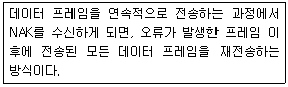
- Stop-and-Wait ARQ
- Selective-Repeat ARQ
- Go-back-N ARQ
- Sequence-Number ARQ
(정답률: 63%)
94. IEEE에서 규정한 무선 LAN 규격은?
- IEEE 802.3
- IEEE 802.5
- IEEE 802.11
- IEEE 801.99
(정답률: 64%)
95. 라우팅 프로토콜이 아닌 것은?
- RIP
- OSPF
- BGP
- PPP
(정답률: 57%)
96. 내부라우팅 프로토콜의 일종으로 링크상태 알고리즘을 사용하는 대규모 네트워크에 적합한 것은?
- RIP(Routing Information Protocol)
- BGP(Border Gateway Protocol)
- OSPF(Open Shortest Path First)
- IDRP(Inter Domain Routing Protocol)
(정답률: 52%)
97. 진폭과 위상을 변화시켜 정보를 전달하는 디지털 변조 방식은?
- FM
- QAM
- PSK
- ASK
(정답률: 58%)
98. 메시지 교환 방식에 대한 설명으로 거리가 먼 것은?
- 송신데이터 순서와 수신 순서 불일치
- 고정적인 대역폭을 가진 전용 전송로 필요
- 전송 도중 오류 발생 시 메모리에 축적되어 있는 복사본 재전송 가능
- 각 메시지마다 수신 주소를 붙여서 전송
(정답률: 39%)
99. 불균형적인 멀티포인트 링크 구성 중 주 스테이션이 각 부 스테이션에게 데이터 전송을 요청하는 회선 제어 방식은?
- Completion
- Polling
- Select-Hold
- Point to Point
(정답률: 53%)
100. HDLC의 데이터 전송 동작모드에 속하지 않는 것은?
- NRM
- ABM
- ARM
- WCM
(정답률: 64%)